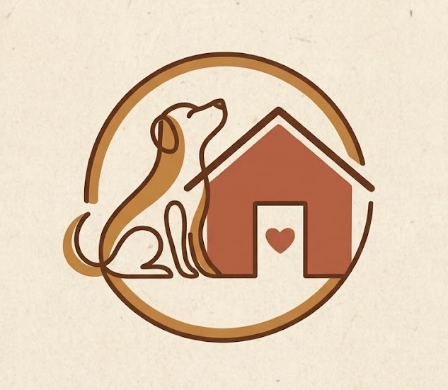
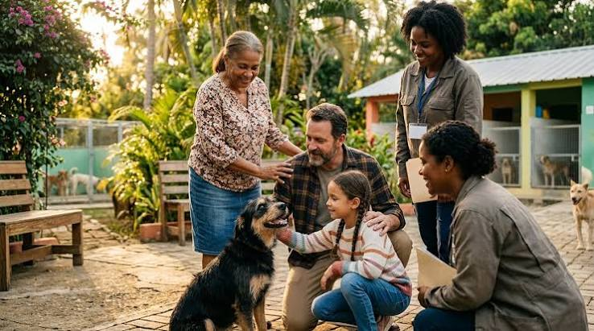

Adopta
Dale una segunda oportunidad a un perrito. Conoce a nuestras mascotas listas para integrar tu hogar.
Ver Adopciones
Somos una organización sin fines de lucro comprometida con el rescate, la rehabilitación integral y la adopción responsable de perros en situación de calle o vulnerabilidad. Nuestro trabajo abarca desde la atención veterinaria de urgencia y la vacunación, hasta la contención afectiva de cada uno de nuestros animales. Creemos firmemente que cada vida importa y trabajamos día a día para ser el puente entre un perro rescatado y una familia amorosa. ¡Tu nuevo mejor amigo te está esperando para comenzar una nueva historia juntos!

Dale una segunda oportunidad a un perrito. Conoce a nuestras mascotas listas para integrar tu hogar.
Ver AdopcionesTus aportes nos permiten cubrir los gastos de alimentos, insumos médicos y atención veterinaria.
Quiero DonarSumate a nuestro equipo en tareas de paseo, cuidado diario y apoyo en las jornadas de adopción.
Sumarme